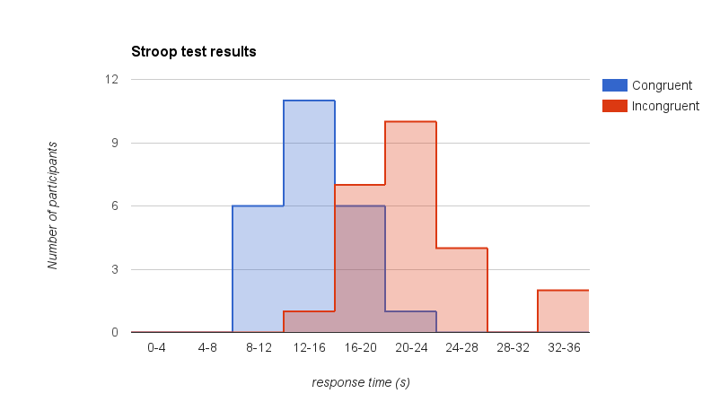

The purpose of this document is to fulfill the requirements for the Stroop Effect project in Udacity's Data Analysis nanodegree program. It responds to the tasks given here
1. What is our independent variable? What is our dependent variable? The independent variable is type of word - congruent or incongruent. The dependent variable is participants' time to name colors.
2. What is an appropriate set of hypotheses for this task? What kind of statistical test do you expect to perform? Justify your choices. Let represent the mean time for participants to name congruent colors and let represent the mean time for participants to name incongruent colors. Then,
The null hypothesis says the average time to name incongruent colors minus the average time to name congruent colors is zero. The alternative hypothesis says that the average time to name incongruent colors is longer than the average time to name congruent colors. I would perform t-tests for dependent samples with and one-tailed critical values:
3. Report some descriptive statistics regarding this dataset. Include at least one measure of central tendency and at least one measure of variability. Refer to this spreadsheet for all calculations used to derive the results below in the Summary Statistics table.
| Congruent | Incongruent | Difference | |
|---|---|---|---|
| count, | 24 | 24 | 24 |
| mean, (seconds) | 14.051 | 22.016 | 7.965 |
| median (seconds) | 14.357 | 21.018 | 7.667 | standard deviation, (seconds) | 3.559 | 4.797 | 4.865 |
4. Provide one or two visualizations that show the distribution of the sample data. Write one or two sentences noting what you observe about the plot or plots? The image below shows the number of participants as functions of test durations. It shows that people tend to take longer to name incongruent colors than congruent colors. While the distributions for both functions are slightly postively skewed, incongruent colors have a wider distribution.
5. Now, perform the statistical test and report your results. What is your confidence level and your critical statistic value? Do you reject the null hypothesis or fail to reject it? Come to a conclusion in terms of the experiment task. Did the results match up with your expectations? Using the results below, I reject the null hypothesis. The t-static exceeds the t-critical value, and the p-value is very small. The results match up with my expectation that incongruent information makes it longer for people to correctly identify colors.
| calculation/reference | value | |
|---|---|---|
| confidence level, | 0.05 | |
| degrees of freedom, | 24 - 1 | 23 |
| t-critical | t distribution table | 1.714 |
| t-stat | spreadsheet | 8.021 |
| p-value | calculator for one-tailed | less than 0.00001 |
| decision | reject the null hypothesis |
6. Optional: What do you think is responsible for the effects observed? Can you think of an alternative or similar task that would result in a similar effect? Some research about the problem will be helpful for thinking about these two questions! I think incongruent colors take longer to identify because the participants have to suppress their knowledge of the meaning of the word. If people were asked to identify shapes that enclosed words such as "triangle", "square," and "star", we can expect them to take longer if the shape does not match the word than if the shape and word were congruent.
{kind=link}